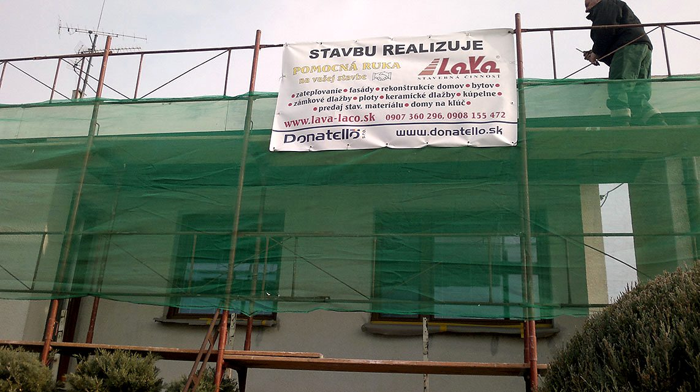

Stavebná firma · Vráble · od roku 2004
Pomocná ruka
pri stavbe.
Rekonštrukcie domov a bytov, zámkové dlažby, fasády so zateplením aj strechy. Pre Vráble, Nitru a okolie, od poradenstva u Vás až po hotovú prácu.

O firme
Od dlažby pred domom
po novú strechu.
Stavebná firma LaVa začala svoju činnosť v roku 2004. Na začiatku sme robili hlavne úpravy vonkajšieho a vnútorného terénu, pokládku zámkovej dlažby, spevnené plochy, komunikácie a parkoviská. S akciovou spoločnosťou Mozaika sme sa podieľali aj na výstavbe parkovísk pre väčšie nákupné strediská a supermarkety.
Dnes robíme práce v kompletnom rozsahu: pozemné staviteľstvo a rekonštrukcie. Rodinný dom, byt alebo dvor u nás zvládne jedna firma od búrania a murovania cez zateplenie a strechu až po dlažbu a plot.
- 2004
- začiatok našej činnosti
- 20
- referencií s fotkami z Vrábľov a okolia
- 13
- druhov stavebných prác

Zhotoviteľ stavby
- Obchodné meno
- LaVa (Ladislav Vaš)
- Sídlo
- Lúky 1118/32, Vráble (Melek)
- IČO
- 41436326
- Zodpovedná osoba
- Ladislav Vaš
- Kontakt
- stprace@lava-laco.sk
Naše služby
Čo pre Vás postavíme.
Pri každej práci začíname poradenstvom priamo u Vás: odporučíme materiál aj postup a až potom sa pustíme do realizácie.
Ďalej robíme
- {{dalsie}}
Postup · spevnené plochy
Dobrá dlažba sa začína pod zemou.
Zámková dlažba je naša práca od prvého dňa firmy. Takto pri nás vzniká dvor, chodník alebo parkovisko, vrstva po vrstve.
- {{kroky}}
Referencie
20 stavieb z Vrábľov a okolia.
17 z nich je do 15 km od Vrábľov. Kliknite na stavbu a pozrite si všetky jej fotky, alebo na mape vyberte obec.
Vráble a okolie · {{n_fotiek}} fotiek z 20 stavieb
Cenník
Cenu poznáte skôr, ako začneme.
Každá stavba je iná, preto cenu počítame osobitne: materiál plus práca podľa rozsahu a náročnosti. Aby ste mali prehľad o financovaní ešte pred prvým výkopom.
- 01
Pošlete nám popis a výmery
Cez formulár nižšie stačí stručne opísať, čo plánujete, a pridať rozmery.
- 02
Pozrieme sa na miesto
Predbežnú cenu vypracujeme na základe osobnej prehliadky miesta a dohody s Vami.
- 03
Rozpočet zadarmo
Dostanete bezplatný predbežný rozpočet stavebných prác aj materiálu, e-mailom.
Materiál zabezpečíme
Cez našich dodávateľov, ktorí vedia stavebný materiál zohnať aj za výhodnejšie ceny. Do ceny materiálu započítame aj prenájom strojov a zariadení.
Alebo máte vlastný
Materiál si môžete zabezpečiť aj sami z vlastných zdrojov. Potom platíte len za prácu.
Kontakt
Napíšte nám, čo chystáte.
Na základe Vášho popisu a výmer Vám e-mailom pošleme predbežný rozpočet prác a materiálu.
Majiteľ firmy
Ladislav Vaš
0907 360 296 stprace@lava-laco.skLúky 1118/32, Vráble (Melek)
IČO 41436326